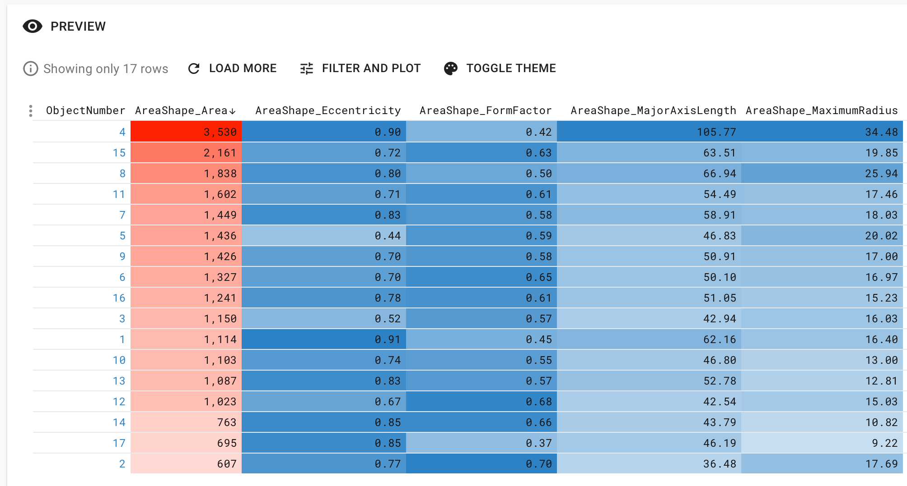
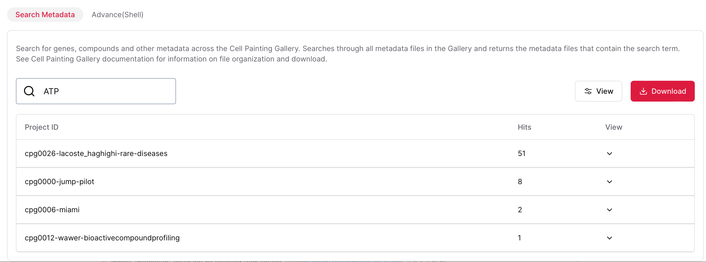

Browsing Data on the Cell Painting Gallery#
Before browsing data on the Cell Painting Gallery you may find it helpful to read about our data structure. We provide below instructions for browsing data using Quilt, AWS CLI, boto3, or Cell Painting Gallery Tools.
Browsing the Cell Painting Gallery with Quilt#

The Cell Painting Gallery is indexed on Quilt which enables account-free, in-browser browsing of data. Within the Cell Painting Gallery bucket you can click through prefixes for a complete listing of all files with their size and last-modified date.

Additionally, you can search/filter prefixes and files by selecting the show filters button (the three-line stack next to the page numbers) and entering filter/s of your choice.
For image browsing, Quilt shows thumbnails of all images in a prefix and will also show a large image preview if you select a specific image file.


For data browsing, Quilt has a number of in-browser features for browsing and exploration of tabular data (such as .csv’s). Previewed tabular data can be sorted by column and columns can be color labeled, among other features. Additionally, there are built-in plotting tools for further data exploration.
Listing the Cell Painting Gallery with AWS CLI#
The Amazon Web Services Command Line Interface (AWS CLI) is a unified tool to manage AWS services from the command line. AWS provides more information on AWS CLI here. Before using AWS CLI you will need to install it, following AWS instructions.
DATASET=cpg0000-jump-pilot
aws s3 ls s3://cellpainting-gallery/${DATASET}/ --no-sign-request
Though AWS S3 is object storage, listing will return the available prefixes up to the next ‘/’, similar to returning a folder list. You may want to perform subsequent listing, appending prefixes always with a ‘/’ at the end of the S3 path, until you have browsed to your desired depth. If nothing is returned after your list command then you have entered a prefix that does not exist - check for typos.
e.g.
DATASET=cpg0000-jump-pilot
aws s3 ls s3://cellpainting-gallery/${DATASET}/source_4/workspace/load_data_csv/ --no-sign-request
Listing the Cell Painting Gallery with boto3#
Boto3 is the Amazon Web Services (AWS) Software Development Kit (SDK) for Python. AWS provides more information on boto3 here. Before using boto3, you will need to install it, following AWS instructions.
### Listing by "folder" ###
import boto3
# This allows access without needing AWS credentials
from botocore import UNSIGNED
from botocore.config import Config
s3 = boto3.client('s3', config=Config(signature_version=UNSIGNED))
prefix='cpg0000-jump-pilot' #e.g. 'cpg0000-jump-pilot/source_4/workspace/load_data_csv'
pages = paginator.paginate(
Bucket='cellpainting-gallery',
Delimiter='/',
Prefix=f"{prefix}/")
fullprefix_list = []
for page in pages:
for k in page['CommonPrefixes']:
fullprefix_list.append(k['Prefix'][:-1])
folder_list = [x.replace(f'{path}/','') for x in fullprefix_list]
print (fullprefix_list)
print (folder_list)
Though AWS S3 is object storage, listing with Delimiter='/' will return the available prefixes up to the next ‘/’, similar to returning a folder list.
Without the delimiter a list of every single object with that prefix is returned (see below for example).
You may want to perform subsequent listing, editing your prefix with increasingly nested “folders”.
The fullprefix_list returns a list of complete prefixes within the prefix you passed (e.g. ['cpg0000-jump-pilot/source_4/workspace/load_data_csv/2020_11_04_CPJUMP1', 'cpg0000-jump-pilot/source_4/workspace/load_data_csv/2020_11_18_CPJUMP1_TimepointDay1', 'cpg0000-jump-pilot/source_4/workspace/load_data_csv/2020_11_19_TimepointDay4']) while the folder_list returns just the “subfolders” in a list (e.g. ['2020_11_04_CPJUMP1', '2020_11_18_CPJUMP1_TimepointDay1', '2020_11_19_TimepointDay4'])
### Listing all files ###
import boto3
# This allows access without needing AWS credentials
from botocore import UNSIGNED
from botocore.config import Config
s3 = boto3.client('s3', config=Config(signature_version=UNSIGNED))
paginator = s3.get_paginator('list_objects_v2')
prefix='cpg0000-jump-pilot' #e.g. 'cpg0000-jump-pilot/source_4/workspace/load_data_csv/2020_11_04_CPJUMP1/BR00116991'
# Uses a paginator to allow listing of more than 1,000 objects
pages = paginator.paginate(Bucket='cellpainting-gallery', Prefix=path)
fullfile_list = []
for page in pages:
for k in page['Contents']:
fullfile_list.append(k['Key'])
file_list = [x.replace(f'{path}/','') for x in fullfile_list]
print (file_list)
This will list all files with a prefix no matter the subsequent “nesting”.
The fullfile_list returns a list of complete files (i.e. all objects) within the prefix you passed (e.g. ['cpg0000-jump-pilot/source_4/workspace/load_data_csv/2020_11_04_CPJUMP1/BR00116991/load_data.csv', 'cpg0000-jump-pilot/source_4/workspace/load_data_csv/2020_11_04_CPJUMP1/BR00116991/load_data_with_illum.csv']) while the file_list returns just the file names in a list (e.g. ['load_data.csv', 'load_data_with_illum.csv']).
Searching Metadata in the Cell Painting Gallery with Cell Painting Gallery Tools#

We currently have an alpha release of our Cell Painting Gallery Tools which enables you to search through all metadata files in the Cell Painting Gallery for a string of interest. Enter any string (e.g. gene names, compound names, etc.) and it will return the metadata files that contain the matching string.
Please note that this is an alpha release that is under active development.